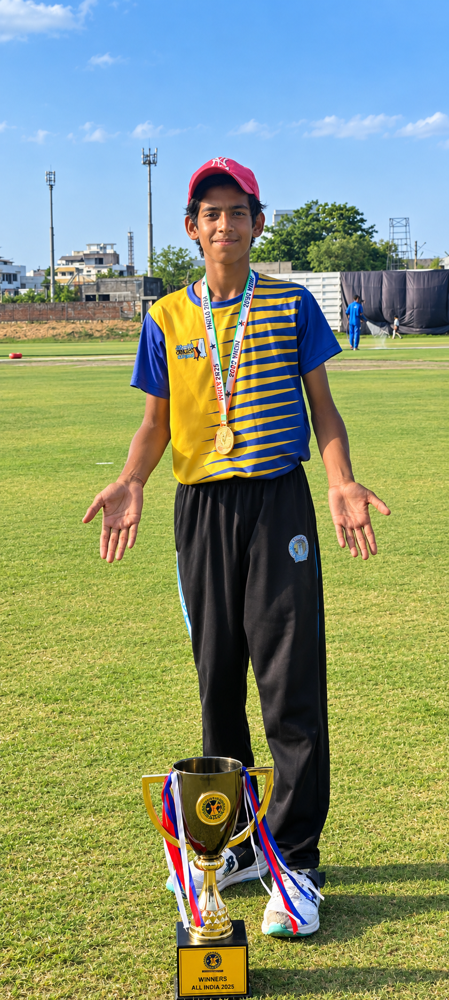

Master Your Game
Learn step by step, from beginner to advanced.

style="width:100%;height:170px;object-fit:cover;border-radius:8px;">🏏 Batting
Learn grip, stance, footwork and cover drive step by step.

🎯 Bowling
Improve your run-up, bowling action, line and length.

🧤 Fielding
Practice catching, ground fielding and accurate throws.
💪 Fitness
Build stamina, speed, agility and strength for cricket.